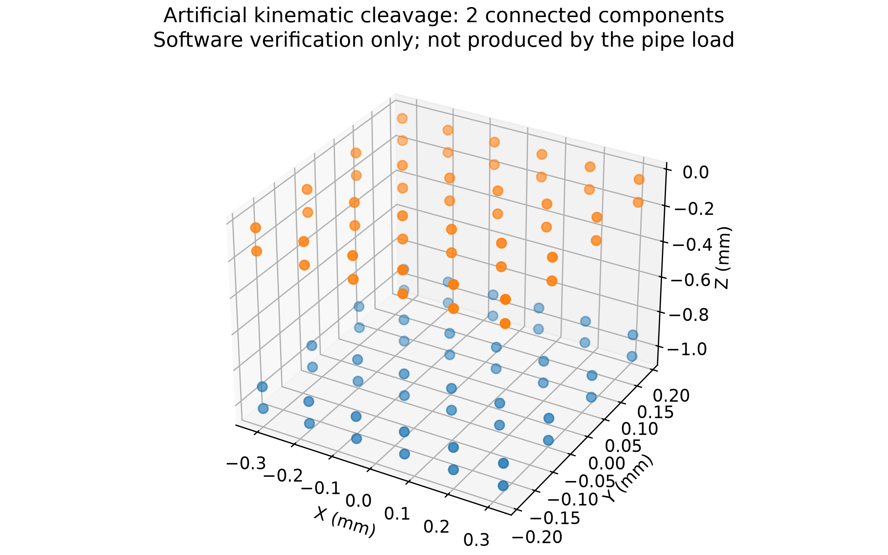

BRAVA RESEARCH / ISOLATED STRAIGHT-PIPE EXAMPLE
直管中的血栓变形与损伤
规定局部微流牵引 → NOSB-PD 血栓 → 循环损伤 → 连通分量识别。当前结果用于验证计算流程。
384血栓粒子
8,000代表循环数
2.681%平均粒子损伤
1最终连通分量
本次主示例发生轻度损伤，未出现断键或碎片，也未模拟血栓清除。蓝色点表示规定的假想微泡中心，标记经过放大；没有求解声场或微泡振荡。500 Hz 的代表性机械载荷与 1 MHz 的循环计数是不同时间尺度，不能视为实际超声疗效预测。
交互结果
拖动旋转、滚轮缩放，使用下方时间条查看已保存宏步。位移采用真实比例；颜色范围在所有帧中一致。
断裂功能验证
另一个人工张开测试产生两个连通分量。它验证键断裂和碎片编号功能；张开位移由测试规定，不能解释为主示例的流动导致断裂。
